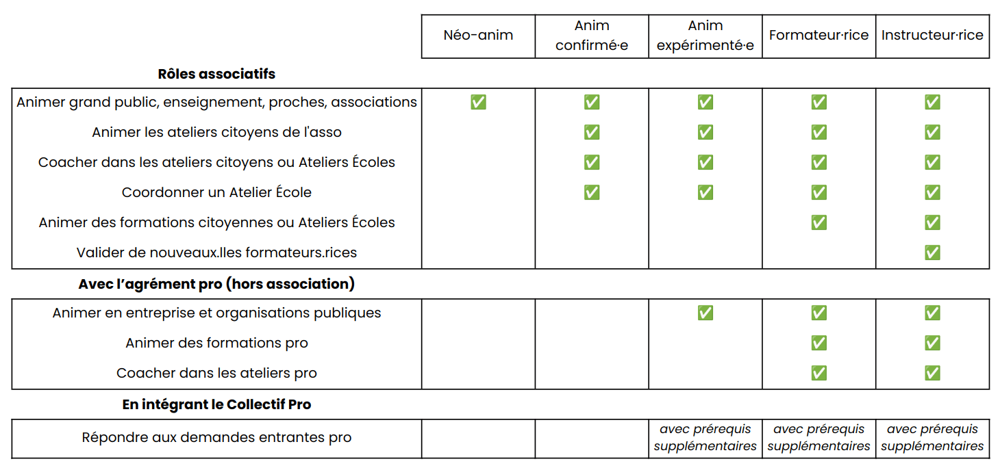

Mon parcours de Fresqueur·euse du Numérique
Ce parcours facilite la progression de chaque animateurice en proposant des étapes claires et en facilitant l’échange de bonnes pratiques entre anims de différents niveaux d’expérience. Cela permet aussi une diffusion de l’atelier au plus grand nombre avec la meilleure qualité d'animation possible.

Néo-anim - Je démarre dans l'animation
J'accède à ce niveau d'expérience car :
Après avoir participé à un atelier Fresque du Climat et participé à un atelier Fresque du Numérique, j’ai suivi la formation à l’animation de l'atelier. Je deviens donc automatiquement Néo-anim de la Fresque du Numérique. Bravo pour ce chouette démarrage ! Je peux rejoindre le slack de l’asso, outil de communication et d'organisation de la communauté d'animateurices de la Fresque du Numérique (lien fourni dans l’email post-formation).
Mes actions possibles :
Avant d’animer, il est conseillé de bien se préparer pour se sentir à l’aise et assurer une animation de qualité.
Je consolide mes connaissances, découvre l’asso et la communauté des animateurices
- Je lis le Guide de l'anim et parcours les ressources pour animateurice (liens depuis le slack, canal #0-bienvenue--liens-importants).
- Une question ? Je la poste sur slack, dans le canal qui me semble le plus approprié.
- Je participe à la Foire Mensuelle des anims, où je peux en apprendre plus sur les actualités de l'asso et rencontrer d'autres animateurices.
Je peux observer un atelier (optionnel mais bienvenu :) )
En tant qu’observateurice, j’assiste à un atelier sans intervenir afin de mieux revoir son contenu, son animation, et ainsi monter en compétence. Pour cela, je m’inscris en observateurice sur une opportunité d’observation postée sur mon canal local (#2-gl-XXXX), ou sur #1-anims-en-ligne-a-pourvoir. Je peux aussi repérer des opportunités d’observation sur le planning des Ateliers citoyens et m’inscrire directement sur le tableau.
Ça y est, je me sens prêt·e et je veux animer une Fresque du Numérique !
Il y a plusieurs possibilités pour animer :
- J’organise et anime librement un atelier, en autonomie, sans qu’il y ait besoin de validation de la part de l’association :
- Dans mon cercle personnel (non pro) : proches, famille, amis…
- Pour une association, un événement grand public, un établissement d'enseignement secondaire ou supérieur de mon réseau. Si j’ai besoin de plus d’anim, je peux partager un message sur mon canal local (#2-gl-XXXX).
- Pour le grand public en assurant moi-même la communication de l’évènement et la gestion des inscriptions. De même, si j’ai besoin de plus d’anim, je peux partager un message sur mon canal local (#2-gl-XXXX). L’atelier pourra être payant pour de petits montants (par ex. 5€ / participant·e) afin d’éviter le no-show des participant·es et de financer le matériel éventuellement.
- Je co-anime un atelier en lien avec l’association :
- Je co-anime ou anime un atelier accompagné·e par un·e coach pour le grand public dans le cadre des ateliers citoyens organisés au nom de l’association. Le·la coach a un niveau d’expérience d’Anim confirmé·e à minima. Je me positionne sur une proposition d’intervention postée sur mon canal local (#2-gl-XXXX). Je peux aussi consulter le planning des Ateliers Citoyens (lien du doc depuis le Slack, canal #0-bienvenue--liens-importants) et contacter l’animateurice principal·e qui coachera. En tant que co-animateurice coaché·e, je gère mon équipe / mes 2 équipes de participant·es tandis que le·la coach me conseille au fil de l’animation et gère éventuellement certaines parties de l’atelier. Je me mets d’accord en amont avec lui·elle sur le rôle de chacun·e pendant l’atelier.
- J’anime un atelier pour une association ou un événement grand public ayant sollicité l’association. Je me positionne sur une proposition d’intervention postée sur mon canal local (#2-gl-XXXX). Une fois que je me suis positionné·e, je suis contacté·e par un·e membre de l’association pour confirmer les modalités.
- J’anime un atelier auprès d’étudiant·es ou d’élèves, dont l'établissement a sollicité l’association, dans le cadre des Déploiements Enseignement. Je me positionne sur une proposition d’intervention postée sur mon canal local (#2-gl-XXXX) et/ou sur #1-déploiements-enseignement. Une fois que je me suis positionné·e, je suis contacté·e par un·e membre de l’association pour confirmer les modalités.
Dans tous les cas, je remplis bien le compteur après chacune de mes animations. Cela permet à l’association de suivre l'activité de la communauté d'animateurices et le nombre de participant·es :)
Point licence important : Je ne peux pas encore animer en entreprise ou organisation publique à ce stade comme l'explique le schéma de licence de cet atelier. Pour animer dans un cadre pro, c’est possible seulement si j'ai le niveau d'expérience "Anim expérimenté·e", et ai donc validé tous les prérequis correspondants. Je pourrai alors signer un contrat d'utilisation pro avec l’association La Fresque du Numérique. Ces prérequis supplémentaires sont nécessaires afin notamment de garantir des animations de qualité.
Si je souhaite aller plus loin, la prochaine étape possible c'est de devenir...
Anim confirmé·e - Je commence à être à l’aise dans l’animation
Mes actions possibles :
Au-delà des possibilités d'animation et d'action qui m'étaient déjà accessibles, être Anim confirmé·e m'ouvre de nouvelles possibilités :
Je peux organiser et animer en autonomie un atelier citoyen au nom de l’asso.
C’est grâce à vos initiatives que l’asso peut proposer de nombreux ateliers ! Sur le canal #1-anims-confirmés où je suis alors ajouté, je décide du créneau et du lieu où animer mon atelier citoyen. Une page de billetterie est alors créée pour cet atelier par un·e permanent·e de l'association. Il devient alors visible sur la page "citoyens" du site web, et l'association pourra communiquer dessus.
Je reçois le listing des participants en amont de l’atelier, et suis totalement autonome sur l’organisation et l’animation de l’atelier. Je peux également être observé par des Néo-Anims.
Je peux coacher des Néo-Anims
- Je peux proposer une session de coaching à 1 ou plusieurs Néo-Anims à l’occasion d’un atelier citoyen, en m’accordant avec eux·elles en amont sur les parties gérées par chacun·e.
- Je peux coacher une intervention dans le cadre d'un déploiement enseignement, en supervisant plusieurs tables. Je pourrai alors être indemnisé·e par l’association pour cela.
Je peux être coordo d'un Déploiement Enseignement
Pour mieux comprendre le fonctionnement des Déploiements Enseignement dans le secondaire et le supérieur, RDV sur la page dédiée à l'enseignement.
Pour mieux comprendre le rôle de coordo, RDV sur le canal slack #1-deploiements-enseignement.
Le rôle de coordo d'un Déploiement Enseignement est indemnisé·e par l’association.
Je peux devenir référente·e du groupe local s'il y en a le besoin
Ce rôle a 3 buts principaux :
- Animer la communauté locale, en organisant des événements avec les bénévoles et en aidant à l’organisation d'ateliers localement.
- Être le point de contact privilégié sur ma ville/région.
- Gérer la distribution de cartes et de matériel auprès de la communauté localement.
J'approfondis mes connaissances sur les sujets liés à l'empreinte environnementale du numérique.
- Je suis le MOOC de l'INRIA sur les impacts environnementaux du numérique (environ 5 heures).
- J'approfondis le guide de l'anim, et les sources qui y sont citées.
- Je suis les actualités pertinentes, comme celles postées dans le canal slack #1-infos-documentation.
J'accède à ce niveau d'expérience car :
Après avoir été Néo-anim, j'ai progressivement validé les prérequis suivants :
- J’ai animé au moins 2 ateliers de la Fresque du Numérique, dont au moins 1 en présentiel
- J’ai reçu au moins 5 feedbacks de participant·es, avec note moyenne supérieure ou égale à 4/5
- J’ai suivi le court module de formation vidéo sur le coaching d'atelier, cela m'aide à comprendre ma posture de coach quand je devrai bientôt accompagner des Néo-anims afin de les aider à monter en compétence, à prendre confiance et à devenir autonome :)
- J’ai adhéré à l’association. Cela me permet d'assister à ses moments forts (Assemblée générale, séminaires…) et de contribuer.
C'est tout bon ?
Bravo ! Je peux alors remplir ce formulaire pour demander à devenir Anim confirmé·e.
Un·e permanent·e de l'association revient vers moi ensuite sous 1 à 2 semaines, et si tout est bon me voilà Anim confirmé·e !
Si je souhaite aller plus loin, la prochaine étape possible c'est de devenir...
Anim expérimenté·e - Je suis à l’aise dans l’animation
Mes actions possibles :
Au-delà des possibilités d'animation et d'action qui m'étaient déjà accessibles, être Anim expérimenté·e m'ouvre un nouvelle possibilité :
Je peux animer l'atelier dans un cadre pro
À partir de ce niveau d'expérience, j'ai les prérequis nécessaires pour devenir Anim pro et ainsi animer l’atelier pour des professionnel·les, client·es ou collègues, entreprises ou organisations publiques (collectivité, agence publique…), que je sois rémunéré ou non. Plus d’infos sur l’utilisation pro et les règles à respecter sur le schéma de licence de l'atelier.
Pour devenir Anim pro, je dois signer un contrat d'utilisation pro avec l'association, et m'engager à reverser des droits d’utilisation de 10€ HT par participant·e pro à l’association. Toutes les infos détaillées sur la procédure à suivre sont en message épinglé du canal slack #4-pro-infos-générales.
Les droits d’utilisation pro reversés contribuent à financer l’association pour que celle-ci ait les moyens de diffuser l’atelier, notamment dans des cadres citoyens et scolaires. Les prérequis demandés garantissent quant à eux la qualité des animations.
Les ateliers au sein des entreprises et organisations publiques ne sont pas directement gérés par l’association. Pour plus d'information sur le contexte pro, RDV sur la page à destination des entreprises et organisations publiques de notre site.
J'accède à ce niveau d'expérience car :
Après avoir été Anim confirmé·e, j'ai validé les prérequis complémentaires suivants :
- Parmi toutes mes animations de Fresque du Numérique, j’ai animé au moins 2 ateliers de la Fresque du Numérique en co-animation OU en étant coaché·e OU en tant que coach
- co-animation : un atelier où d'autres animateurices (dont au moins un·e Anim confirmé·e) animent avec ou en parallèle de vous, ce qui vous permet de monter en compétences dans votre animation grâce aux interactions avec eux·elles.
- coach : un·e Anim confirmé·e mentore des Néo-anims (2 à 3 maximum) dans le cadre d'ateliers citoyens et enseignement uniquement. Il·elle veille au bon déroulement des ateliers, il·elle n'anime pas mais peut intervenir si nécessaire. Voici le court module de formation vidéo sur le coaching d'atelier
- coaché·e : animateurice mentoré·e par un·e coach (coaching citoyen ou enseignement : ce coach est Anim confirmé·e // coaching pro : ce coach est formateurice)
- J’ai suivi une formation pour approfondir mes connaissances sur les impacts environnementaux du numérique (grand minimum une formation d'une demi-journée). Cela peut être, par exemple, le MOOC de l'INRIA sur le sujet, que nous recommandons.
- J’ai suivi une formation à l’animation de la Fresque du Climat puis animé au moins 1 fois cet atelier.
C'est tout bon ?
Bravo ! Je peux alors remplir ce formulaire pour demander à devenir Anim expérimenté·e.
Un·e permanent·e de l'association revient vers moi ensuite sous 1 à 2 semaines, et si tout est bon me voilà Anim expérimenté·e !
Si je souhaite aller plus loin, la prochaine étape possible c'est de devenir...
Formateurice - Je forme des animateurices
Mes actions possibles :
Je peux organiser et animer une formation citoyenne
Cela vise à former de nouveaux Néo-anims à l'animation de l'atelier. Sur le canal #1-formateur-rice-s où je suis alors ajouté, je décide de quand organiser ma session de formation citoyenne.
Je peux organiser et animer une formation dans un cadre d'enseignement
Pour mieux comprendre le fonctionnement des Déploiements Enseignement dans le secondaire et le supérieur, RDV sur la page dédiée à l'enseignement.
Le rôle de formateurice dans le cadre d'un Déploiement Enseignement est indemnisé·e par l’association.
J'accède à ce niveau d'expérience car :
Je suis parmi les animateurices les plus investi·es et l'atelier n'a plus de secrets pour moi !
Je suis Anim expérimenté·e et j'ai animé au moins 15 ateliers de la Fresque du Numérique au total, dont au moins : 10 en présentiel, 1 en enseignement, 1 en citoyen, et 5 en co-animation.
C'est tout bon ?
Bravo ! Je peux alors remplir ce bilan en vue de devenir formateurice.
Le processus pour devenir formateurice va impliquer plusieurs étapes avec des formateurices et instructeurices et prendre du temps. Ce bilan me permettra donc d'auto-évaluer si je suis prêt·e pour me lancer. Au vu d’une demande croissante, une priorisation de passage est effectuée en fonction de deux critères : zone géographique nouvelle où il n'y a pas encore de formateurice et proportion d'animations bénévoles et pro réalisées.
Si je souhaite aller plus loin, la prochaine étape possible c'est de devenir...
Instructeurice - Je forme des formateurices
Mes actions possibles :
Je peux faire monter en compétence des formateurices
Cela en supervisant une personne en train de devenir formateurice pendant qu'il·elle anime sa première formation.
Je peux animer une session de formation des formateurices
Ces sessions visent à intégrer les nouveaux formateurices, mais aussi une amélioration continue des formateurices déjà actif·ves.
J'accède à ce niveau d'expérience car :
Je suis parmi les formateurices les plus expérimenté·es, l'atelier n'a plus de secrets pour moi, et je suis très investi·e dans l'association ! Après avoir été formateurice :
- J’ai animé au moins 15 formations à l'animation de la Fresque du Numérique pour permettre à de nouveaux animateurs de se lancer, dont au moins 10 en présentiel, avec une note moyenne de feedbacks participant·es à la formation supérieure ou égale à 4/5
- J’ai coordonné au moins 3 Déploiements Enseignement
Synthèse des actions possibles par niveau d'expérience
Spécificités du parcours hors de France
Le parcours décrit ci-dessus est valable pour la France métropolitaine et certains autres territoires où à la fois la Fresque du Climat et la Fresque du Numérique sont déjà suffisamment développées.
Pour les autres territoires, des adaptations au contexte local sont prévues par l'association, par pragmatisme afin de faciliter la diffusion de l’atelier au plus grand nombre, mais aussi en conservant l'objectif de la meilleure qualité d'animation possible.
Ci-dessous les adaptations actuelles concernant l'atelier de conscientisation climat :
| Pays ou région de résidence de l’animateur | Atelier de conscientisation climat |
|---|---|
| France Martinique | « La Fresque du Climat » |
| France Réunion | |
| Belgique | |
| Suisse | |
| Reste du monde | - « La Fresque du Climat » OU - « En-ROADS » version en groupe avec facilitateur (et non la simulation individuelle) |
Ci-dessous les adaptations actuelles concernant les niveaux d'expérience :
| Pays ou région de résidence de l’animateur | Anim confirmé·e | Anim expérimenté·e | formateurice |
|---|---|---|---|
| France Martinique | Au moins 2 ateliers de la Fresque du Numérique, dont au moins 1 en présentiel | Co-animation avec au moins un·e Anim confirmé·e, ou coaching/mentorat | Au moins 15 ateliers de la Fresque du Numérique, dont au moins 10 en présentiel |
| France Réunion | |||
| Belgique | |||
| Suisse | |||
| Reste du monde | Au moins 2 ateliers de la Fresque du Numérique (présentiel recommandé mais non-obligatoire) | Co-animation ou coaching/mentorat | Au moins 15 ateliers de la Fresque du Numérique, dont au moins 3 en présentiel |